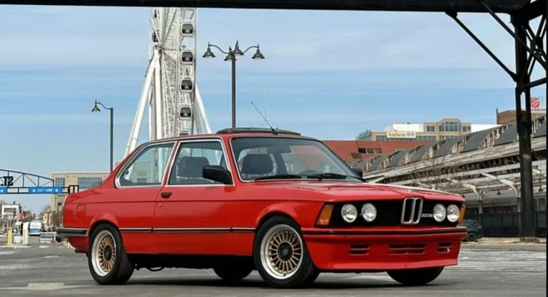
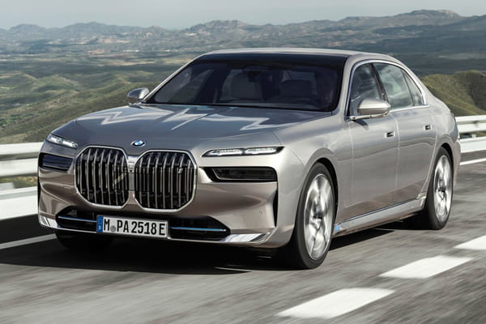

BAVARIAN LEGEND| EXPLORE THE POWER OF BMW
- The Heart of the Legend
- M Division
- THE PHYSICS OF DRIVING
- A DESIGN LANGUAGE OF MOTION
- THE FUTURE ELECTRIC PERFORMANCE
The story of Bayerische Motoren Werke (BMW) is more than just a history of a car manufacturer; it is a testament to how mechanical precision can be elevated to a form of high art. For decades, the "Bavarian Legend" has stood at the intersection of aesthetic beauty and rigorous technical innovation, earning its reputation through a relentless pursuit of the "Ultimate Driving Machine." 1-The Heart of the Legend: Inline-Six Mastery At the core of BMW’s power lies its commitment to the Inline-Six engine. While many competitors shifted to V6 configurations for packaging convenience, BMW stayed true to the straight-six for its inherent physical balance. Because the cylinders fire in a sequence that cancels out vibrations, the power delivery is exceptionally smooth. This engine architecture has become a hallmark of the brand, offering a linear torque curve that makes the car feel like it is breathing with the driver. 2-M Division: From Racetrack to Road The "Power of BMW" is perhaps best personified by its M (Motorsport) Division. Founded in 1972, this branch took the lessons learned on the world’s most demanding circuits—like the Nürburgring—and applied them to production sedans. The E30 M3: Often cited as the most successful touring car in history, it proved that a compact chassis combined with high-revving power could redefine performance. Technological Trickle-Down: Features like Individual Throttle Bodies (ITBs) and advanced Differential Locks transitioned from racing prototypes to street-legal legends, ensuring that every "M" badge represents a track-ready pedigree.3-The Physics of Driving: 50/50 Balance Power is nothing without control. BMW engineers have long obsessed over weight distribution. By pushing the engine back toward the firewall and utilizing lightweight materials like aluminum and carbon-fiber-reinforced plastic (CFRP), they strive for a perfect 50:50 weight ratio. This balance ensures that during high-speed cornering, the car remains neutral, preventing the "nose-heavy" feel common in many front-engine vehicles. 4-A Design Language of Motion: BMW’s design philosophy, often referred to as "shaping the air," focuses on functional aesthetics. Every curve serves a purpose The Kidney Grilles: Beyond being an iconic visual signature, they are critical for cooling high-performance powerplants. Air Curtains: Modern BMWs use specialized vents in the front apron to reduce turbulence around the wheel arches, lowering drag and increasing efficiency. The Driver-Centric Cockpit: The interior architecture is traditionally tilted toward the driver, emphasizing that the human behind the wheel is the most important component of the machine. 
5-The Future: Electric Performance Today, the legend is evolving. The power of BMW is no longer defined solely by internal combustion. Through the i-Series, BMW is proving that electric motors can provide the same emotional "kick" and handling precision as their gasoline predecessors. By integrating high-voltage batteries low in the chassis, they have lowered the center of gravity even further, creating a new era of Bavarian performance. "Where engineering meets art, you find a BMW. It is a laboratory for innovation, where the thrill of the drive is the ultimate objective." In conclusion, the power of BMW is not just measured in horsepower or top speed. It is found in the harmony of the chassis, the responsiveness of the engine, and the soul of a brand that refuses to compromise on the joy of driving. For over a century, the Bavarian legend has proved that when you master the science of motion, the result is nothing short of legendary 
page 2 page 1